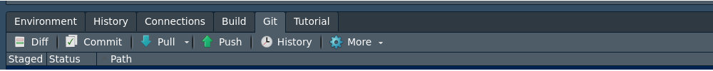

Actividad 1
Creación de tablero

Me diante este paquete flexdashboard se pueden construir
tableros en formato html que se podrán colocar en github para
visualización de los resultados de una investigación o estudio de
datos
Con el fin de visualizar los pasos para la construcción de un tablero
se utiliza la data CarreraLaLuz2022 contenida en
paqueteMET y se describen los siguientes pasos utilizado el
lenguaje Rmardown con algunos cambios adicionales
Paso 1 :
Descargar e instalar los paquetes requeridos
install.packages("devtools") # instala paquete devtools
devtools::install_github("dgonxalex80/paqueteMET") # descarga de paqueteMET
library(paqueteMET) # activar paqueteMET
data("CarreraLuz22") # cargar la dataset
install.packages("remotes")
remotes::install_github("rstudio/bslib") # descarga paquete que contiene formato
Paso 2 :
Creación de la plantilla del tablero
File / New File / R Markdown...
From Template / Flex Dashboard themed with {bslib}

Paso 3 :
Ajuste del formato
El formato permite cambiar los colores que por defecto trae la plantilla y ajustarlos a una paleta especial de colores. También se puede cambiar la orientación del tablero de columnas por defecto a filas y ajustar los títulos
Column {data-width=350}: permite determinar el ancho de la columnaColumn {data-width=700 .tabset}: permite construir páginas adicionalesvalueBox(value = variable,caption = "Titulo caja",icon = icono, color = código color): permite construir cajas con indicadores

Paso 4 :
Incorporación de los elementos al tablero
Se pueden agregar los gráficos en los bloque preestablecidos o crear nuevos según las necesidades y los indicadores más relevantes
Paso 5 :
Publicación
Para su publicación es necesario :
Tener instalado git en nuestro equipo
Tener una cuenta abierta en GitHub
Crear un repositorio en GitHib
Clonar el repositorio en nuestro equipo
Crear archivo Rmd con formato flexdashboard (pasis 1 a 4)
Renderizarlo el archivo con Kinit (convertirlo en formato html)
Subirlo los archivos al repositorio de GitHub
git add .git commit -m "primer commit"git push
Estos códigos se pueden ejecutar desde la consola
 O desde la ventana git de RStudio
O desde la ventana git de RStudio

Publicar el tablero : Este paso requiere regresar al repositorio de github y en él configurar el repositorio como página web:
- Settings
- Pages .+ Branch : main , (root), Save . Se debe esperar unos
momentos mientras se genera la URL. Cuando aparezca la URL, agregamos al
final el nombre del tablero por ejemplo :
https://usuariogithub.github.io/nombrerepositorio/tablero.html